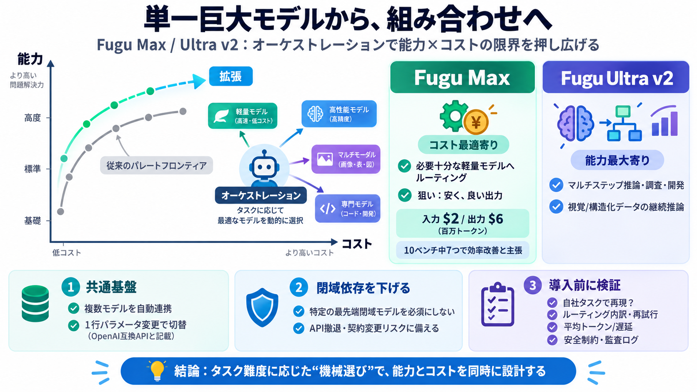

Sakana AI Opens Fugu Beta: Multi-Model Orchestration API | aiHola
The API is OpenAI-format compatible, so anyone already wired into GPT, Claude, or Gemini can swap in a Fugu endpoint. Tw…

単一巨大モデルから、組み合わせへ
パレート最適フロンティアを「オーケストレーション」で押し広げるSakana AIの試みです。 能力（できること）とコスト（支出）を二軸で設計します。
パレート最適の壁
性能を上げるほどコストが増えやすいとき、改善できない「限界のカーブ」がパレートフロンティアです。 単一モデルだけだと、そこに到達しにくい領域が残りがちです。
答えは「機械」選び
単一巨大モデルではなく、専門特化されたモデル群を状況に応じて動的ルーティングします。 目的ごとに最適化された「Fugu Max」「Fugu Ultra v2」を用意するのが中核です。
最安で良い出力へ
必要十分な「軽量側」のモデルへタスクを振り分け、低いトークン費用でフロンティア級の結果を狙います。 同じ方向性で「最も安く、最良の出力」を主眼に据えています。
最高能力を引き出す
マルチステップ推論・自律的リサーチ・フルスタック開発で、とにかく最高の能力を引き出す方向です。 特に視覚/構造化データを伴う継続的推論が強いとされます。
閉域依存を下げる
Ultra v2は、Fable 5、Fable 5.1、GPT-6-Astraのような「個別の最先端閉域フロンティアモデル」を必須にせず、スワップ可能なオープン/専門モデル群のオーケストレーションで高性能を狙うと説明しています。
同じ器で両端へ
両者は同じコアのオーケストレーションアーキテクチャを共有し、目的に応じて最適化されています。 OpenAI互換APIを通じて、1行パラメータ変更でアップグレード、移行不要をうたいます。
ベンチだけでは断定不可
ベンチマークの勝ち負けは、プロンプト条件、ツール、推論手順、失敗時の再試行、遅延などに強く依存します。 「40〜60%低い」等の数値は有望でも、自社タスク分布で再現されるかの検証が必要です。
パレートは条件依存
パレート最適は厳密には観測された点集合と評価条件に依存します。 したがって特定ベンチの優位が、低リソース環境・厳しいリアルタイム要件・安全制約の下でも同様に成立するとは限りません。
ロックイン回避の意味
ベンダーロックイン回避やAPI停止への言及は、企業の運用リスク低減に関係します。 ただし、実際に入れ替えを保証するには互換性・品質保証・再検証プロセスの確認が必要です。
導入判断の観点
強みは「能力×コスト」をオーケストレーションで同時に改善しようとする筋の良さです。 一方で、運用ではルーティング内訳、失敗時の振る舞い、平均コスト（再試行含む）、遅延、セキュリティ設定を確かめるべきです。
参照（本稿要約の出典範囲）
本スライドは、ユーザー提示文（Pre-knowledge / Summary / Points / FAQ / My opinion）に含まれる記述を圧縮して要約しています。 数値・ベンチ名・モデル名は提示文に基づいて記載しています。
The API is OpenAI-format compatible, so anyone already wired into GPT, Claude, or Gemini can swap in a Fugu endpoint. Tw…
Sakana Fugu models are based on our ICLR 2026 papers (Trinity and Conductor), and we have substantially further improved…
New: give your AI agents live LLM pricing & benchmarks with the Price Per Token MCP. Get the MCP Price Per TokenPrice P…
New: give your AI agents live LLM pricing & benchmarks with the Price Per Token MCP. Get the MCP Price Per TokenPrice P…
New: give your AI agents live LLM pricing & benchmarks with the Price Per Token MCP. Get the MCP Price Per TokenPrice P…